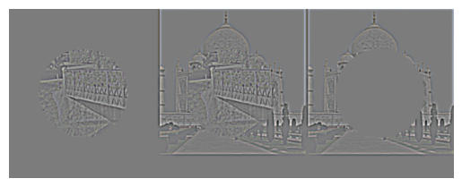

In this project, I implemented convolutions and filtering with frequencies. This involved sharpening and blurring images, as well as creating hybrid images. Furthermore, I implemented Gaussian and Laplacian stacks, and used them to blend together images.
Part 1.1: Convolutions from Scratch!
First, I created a 9x9 box filter and finite difference operators Dx and Dy. I then implemented convolutions, with four for loops and then with two for loops (with padding as well). To test my code, I took a picture of myself and convolved the picture with the box filter I created, and I did this with Dx and Dy as well.
Create 9x9 box filter and finite difference operators Dx and Dy
Implement convolutions with four for loops and two for loops, as well as zero padding
Results:
Portrait convolved with box filter using 4 for loopsPortrait convolved with box filter using 2 for loopsPortrait convolved with box filter using built-in function scipy.signal.convolve2d
Portrait convolved with box filter using4 for loops and DxPortrait convolved with box filter using4 for loops and Dy
Portrait convolved with box filter using2 for loops and DxPortrait convolved with box filter using2 for loops and Dy
Portrait convolved with box filter usingscipy.signal.convolve2d and DxPortrait convolved with box filter usingscipy.signal.convolve2d and Dy
My implementatations of convolutions, with both four for loops and two for loops, produced results that were nearly identical to the built-in function scipy.signal.convolve2d. The images convolved with the finite difference operators Dx and Dy successfully highlighted the vertical and horizontal edges of the image, respectively. Overall, my convolution implementations worked correctly and produced expected results.
To handle boundaries, I used zero padding, which involves adding a border of zeros around the original image. This approach helps to maintain the original image size after convolution and prevents boundary artifacts. By using zero padding, the convolution operation can be applied uniformly across the entire image, including the edges.
As for the runtime, the implementation with four for loops was significantly slower than the one with two for loops, because the two for loop approach pushes the inner computation into vectorized code, and this reduces Python overhead. The built-in function scipy.signal.convolve2d was the fastest, as it is optimized and implemented in C.
Part 1.2: Finite Difference Operator
For this part, I took the picture of the cameraman and convolved it with finite difference operators Dx and Dy in order to show the partial derivative in x and y. I also computed the gradient magnitude image, and then picked a threshold to produce an edge image, which was a binarized version of the gradient magnitude image.
Cameraman
Cameraman convolved with DxCameraman convolved with Dy
In this part, I blurred the cameraman by convolving it with a Gaussian filter G, and then binarized the image. I then implemented another method, which involved convolving the cameraman image with the derivative of Gaussian (DoG) filters DxG and DyG, computing the gradient magnitude image, and then binarizing the image.
Convolving with Gaussian filterConvolving with Gaussian filter, then binarizing
Convolving with the derivative of Gaussian(DoG) filters DxG and DyGConvolving with the derivative of Gaussian(DoG) filters DxG and DyG, then binarizing
I compared the two methods and found that the DoG method produced a cleaner edge image with less noise.
After blurring the image by convolving with a Gaussian, both photos became slightly darker and there were less small details and noise. Both methods involving the Guassian filters gave essentially the same magnitude images.
Part 2.1: Image "Sharpening"
In this part, I took a few sample images and created a Gaussian filter. Using this Gaussian filter, which retains only low frequencies and thus blurs the image, I sharpened the image by subtracting the blurred version (with low frequencies) to only retain the high frequencies. I also blurred the image by using the Gaussian filter to only retain the low frequencies, and then resharpened the image for comparison.
Taj MahalTaj Mahal sharpened
Taj Mahal blurredTaj Mahal resharpened
BridgeBridge sharpened
Bridge blurredBridge resharpened
The sharpened image is definitely a lot more clear than the original image, as the edges are more crisp and there is a lot more contrast between different parts of the image, such as the windows, walls, and background in the case of the Taj Mahal.
In the blurred image, the higher frequencies are filtered out, so only the low frequencies are kept, which is why all the features appear less clear and there is less contrast between the different objects.
The resharpened image is more clear than the blurry image, but not as clear as the sharpened image.
This makes sense because blurring filters out high frequencies, and resharpening can sharpen what remains after blurring the image, but it can't reconstruct certain details that were already lost from blurring.
Part 2.2: Hybrid Images
In this part, I created hybrid images by combining the low frequencies of one image with the high frequencies of another image. I used a Gaussian filter to extract the low frequencies from the first image and subtracted the Gaussian-blurred version of the second image from the original to obtain the high frequencies. I then combined these two components to create the hybrid image, which also leads to different interpretations at different distances.
For the first hybrid image, I also showed other parts of the entire process, including the cutoff-frequency and the log magnitude of the Fourier transform of the two images.
Derek pipeline
Nutmeg pipeline
Derek
Nutmeg
Derek aligned
Nutmeg aligned
Derek fourier transform (log|F|)
Nutmeg fourier transform (log|F|)
Derek filtered for high frequencies
Nutmeg filtered for low frequencies
Cutoff frequency choice (kernel size = 25, sigma = 5)
Church (high frequencies)Flower (low frequencies)Church + flower hybrid image
Part 2.3: Gaussian and Laplacian Stacks
In this part, I constructed Gaussian and Laplacian stacks, which are similar to pyramids, but the difference is that in a stack the images are never downsampled. I then applied the Gaussian filter at each level to create each level of the Gaussian stack. I then applied my Gaussian and Laplacian stacks to the Oraple (orange + apple) and showed the results below.
For the oraple's Gaussian filter, I used a kernel size of 31 and a sigma of 6. I also used a depth of 7, and I showed the results at each level.
Oraple at depth 0Oraple at depth 1
Oraple at depth 2Oraple at depth 3
Oraple at depth 4Oraple at depth 5
Oraple at depth 6Oraple at depth 7
Oraple final
The blended image successfully combined features from both the apple and orange images, with a smooth transition between them. The left side of the blended image prominently features the apple, while the right side showcases the orange, demonstrating effective use of Laplacian stacks and masking for image blending.
Part 2.4: Multiresolution Blending
Aside from the oraple, I also blended together two other pairs of images.
First, I blended together a church and a flower. I initialized the mask as an ellipse, keeping the church where the mask is 1 (inside the ellipse) and keeping the flower where the mask is 0 (outside the ellipse).
Church + flower at depth 0Church + flower at depth 1
Church + flower at depth 2Church + flower at depth 3
Church + flower at depth 4Church + flower at depth 5
Church + flower at depth 6Church + flower at depth 7
Church + flower final
Additionally, I blended together a bridge and the taj mahal. I initialized the mask as an circle, keeping the bridge where the mask is 1 (inside the circle) and keeping the taj where the mask is 0 (outside the circle).
Bridge + taj at depth 0

Bridge + taj at depth 1